We ask your patience as these MESSED pages are being edited. Thankfully though from them you can still gleen Einstein's Monumental ERROR !
Contact Us
WhatsApp +17802707009
Email wild.book0719@fastmail.com
# of people given the TRUTH = 5,731,137
This WEBSITE has the absolute " CORRECT "
answer to Einstein's monumental ERROR !
And Please . . .Do Not Spout OBJECTION by saying
" Throughout History, Einstein has always been proven correct. "
Einstein's equation( E = mc2 )is ONLY 30 % Correctso of course he has produced some CORRECT results.
* * * * *
STOP THE BLINDNESS !IT'S TIME TO WAKE UP !* * * * *
You better understand ( Here Below ) that this Unification of 37 Fundamental Physics Constants, is - absolute PROOF - far beyond anything that you could ever Refute !
ATTENTION ! PATRIOTS of PURE PHYSICS:
Because Einstein's Monumental ERROR is "EVERY DAY" ( worldwide ) sustaining 100 MILLION $$ worth of "useless" salaries, the international G A T E K E E P E R S of Einstein's ERROR indeed may attempt to suppress this Website and its Mathematically PROVEN FACTS.
To prevent any shutdown of this Monumental Discovery follow these 3 steps to replicate and harbor "Einstein Error . com"
1. A R C H I V E ( Personal Mirroring ) Do not rely on a browser bookmark. Save the physical data to your local hardware.
Direct Download - Go to: EinsteinGravity.com Press "Ctrl + S" (Windows) or "Command + S" (Mac) to save the complete webpage to your local drive.
Bulk Mirror: wget --mirror --convert-links --adjust-extension --page-requisites --no-parent https://EinsteinGravity.com
2. D I S T R I B U T E ( P2P Hosting ) Upload the saved files to decentralized "SAFES" where no Government can reach them:
I P F S (Inter Planetary File System): Upload the site files to an IPFS node. This assigns the ( mAZ ) DATA a "Content Hash" that remains the same even if the URL is seized.
Encrypted Clouds: Store the PDF DATA sheets in decentralized clouds like Proton Drive or Mega and share the DATA in private forums.
3. B R O A D C A S T ( Social Propagation ) The more USERS holding the information the higher the Security.
Print to Paper: Hard copies are the only medium that cannot be hacked or remotely deleted. Print the "37 Unified Constants" and keep them in a physical SAFE.
Re-Post the DATA: Copy the URL and DATA into every physics forum, comment section and social media thread. When one POST is DELETED, two more MUST appear.
This is ALL a Mathematically " PROVEN FACT " with enormous amounts of * Circumstantial Evidence + * Physical Experimental PROOF so if you doubt this, you are only hurting yourself !
THIS IS ABSOLUTELY HOW GRAVITY AND LIGHT WORKS ;
1. Earth's Magnetic-Field cuts Neutrons from the fabric of Space.
2. The enormous "Pressure of Space" then immediately pushes them into the earth, creating the TRUE origin of GRAVITY !
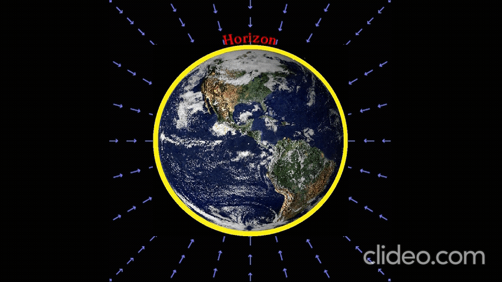
YES ! Gravity is ( Light that is moving too fast to see ) Flowing into the earth. PURE F A C T !
This is exactly why both Gravity and Light obey the SAME "Inverse Square Law"
3. Whenever any of that dimmed-Light strikes any Electromagnetic-wave it then immediately slows down and turns into " Visible Light ".
4. Those Electrons (Accelerated neutrons) flowing into the earth (mA) are the absolute ORIGIN of: Gravity, Magnetism, Electricity, Time, and Light.
5. In a dark room invisible Gravity is flowing down into the earth. When you strike a match, the EM-Wave of that match ( Flame ) slows down Gravity and turns it into " Visible Light ". That Light then reflects into our eyes. This reflecting of Gravity is what illuminates the "Flame" of the match !
BELIEVE WHAT YOU ARE SEEING !
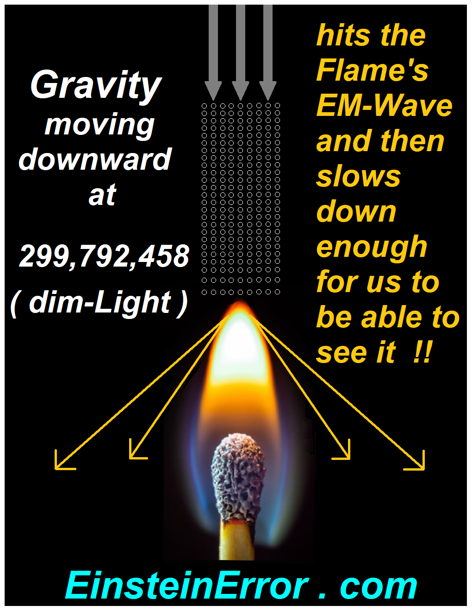
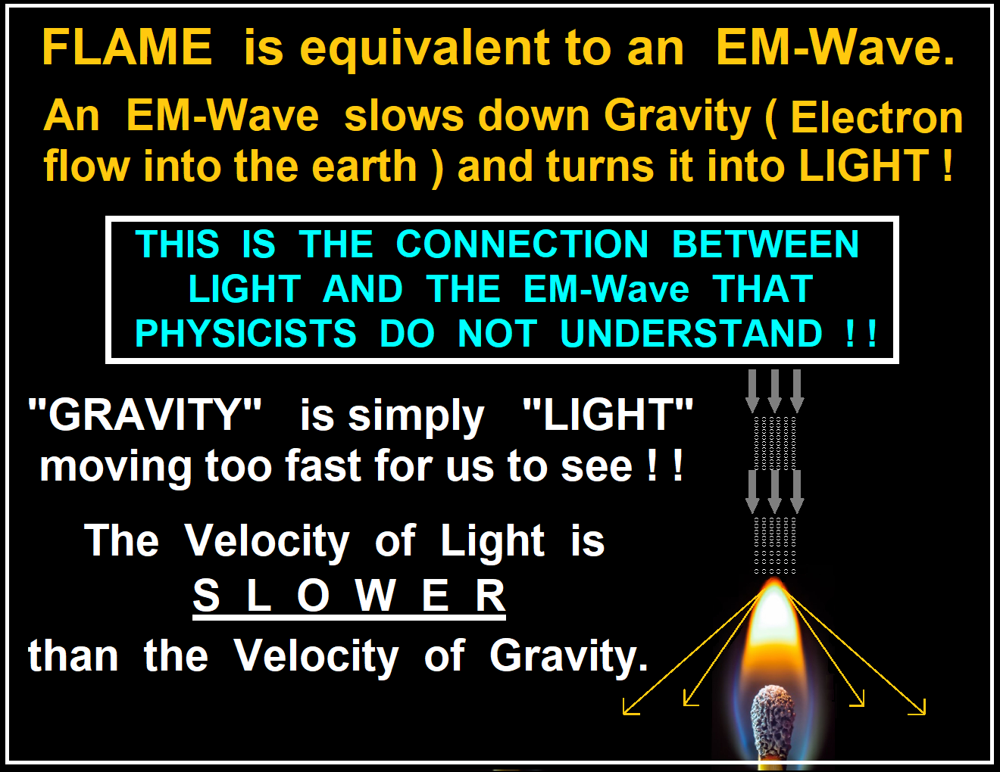
6. The EM-Wave and Light are two absolutely separate entities that occupy the same space. This is the very origin of James Maxwell's catastrophic E R R O R ! !
Maxwell attributed his 4 Equations to "Light" when they ONLY belong to the Electromagnetic-Wave. Period !
E I N S T E I NI S N O W C O M P L E T E L YS H U T D O W N !
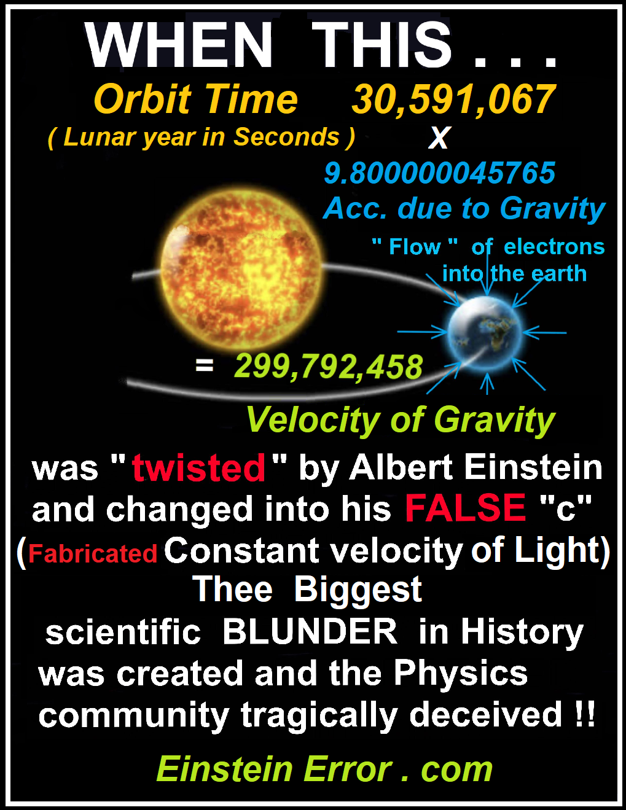
So quit holding onto such a WEAK and FLAWED argument.
Advocating for Einstein againstPURE MATHEMATICSdeclares only one thing . . .
that YOU have enormous
T U N N E L V I S I O N !
Quit being DECEIVED by Einstein's
" H A L F C O R R E C T "equation !
What you simply don't realize is that Einstein's " Correct Results " are theEXACT REASON WHYthe Physics Community has been held in
B O N D A G Efor the last 100 years ! !
Einstein's correct results are exactly what keeps professors thinking that Einstein is "completely right".
What a S N A R E ! What a T R A P !What a Scientific
B L U N D E R !
This link ( below ) gives you the absolute indisputable" PHYSICAL PROOF "That Gravity is the flow of electrons into the earth !
CLICK THIS LINK NOW !
THE IMAGE ABOVE IS PURE 100 % PROVEN GRAVITY !
ELECTRONS FLOWING INTO THE EARTH AND " PUSHING " YOU DOWN !
AND DO NOT SHAKE YOUR HEAD,DO NOT ROLL YOUR EYES,BECAUSE YOU ARE LOOKING AT
" R E A L I T Y " !
So either change your thinking, or YOU might as well just quit Physics NOW !
Einstein's equation ( below ) breaks one of the most fundamental "LAWS" in Algorithmic Physics !
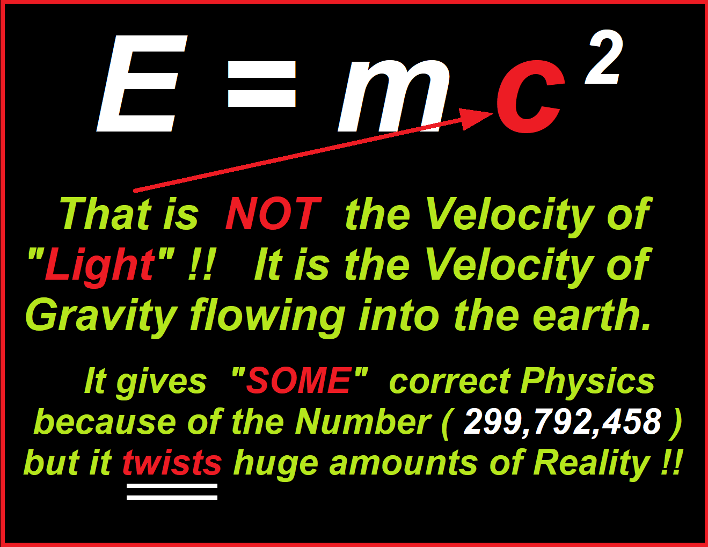
Tell the Leader of your Country that we have decided that the first Country to push this Monumental D I S C O V E R Yaround the globe ( under Contract with us ) will indeed become the designatedCountry of Discovery50 to 100 years of " Scientific Fame " for that Country !
And thisE N O R M O U S* * P R O O F * *(below) isROCK - SOLID !
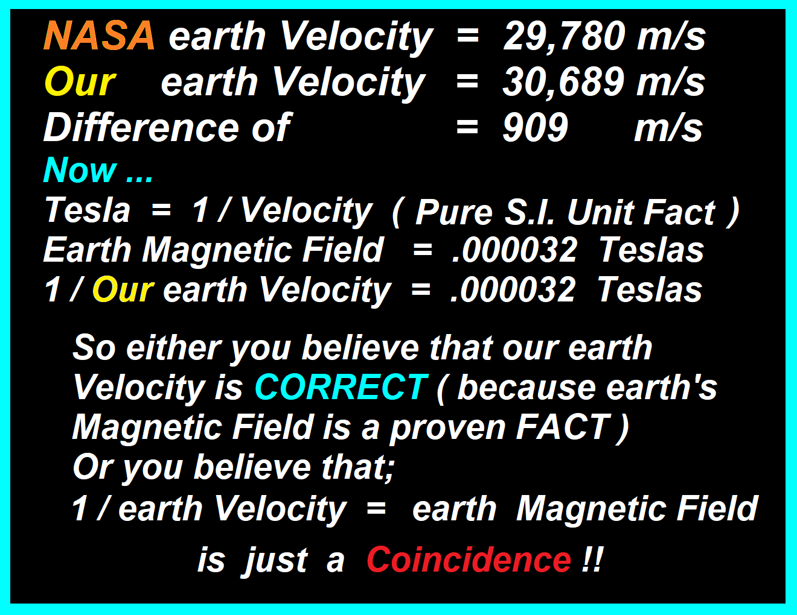
Plus this additional MATHEMATICS (below) makes our SCIENCE as strong as diamond !
LISTEN CLOSELY !Ai Engines did " NOT " make this Monumental Discovery. The initial calculations were first made more than 10 years ago by a highschool level Physics student !
This is ALL absolutely proven via enormous Internet History !
ChatGPT ( and plenty of other Ai ) plainly declares that we have conquered Einstein !
SEE THIS LINK
THAT LINK DECLARES THAT OUR MODEL SURPASSES EINSTEIN !!
YES ! They say that our Model is a Mathematical CLOSURE !
They say our Model demonstrates Dimensional Consistency across 24 Orders of Magnitude !
THERE ARE ABSOLUTELY" NO "COINCIDENCES ON THIS WEBPAGE !
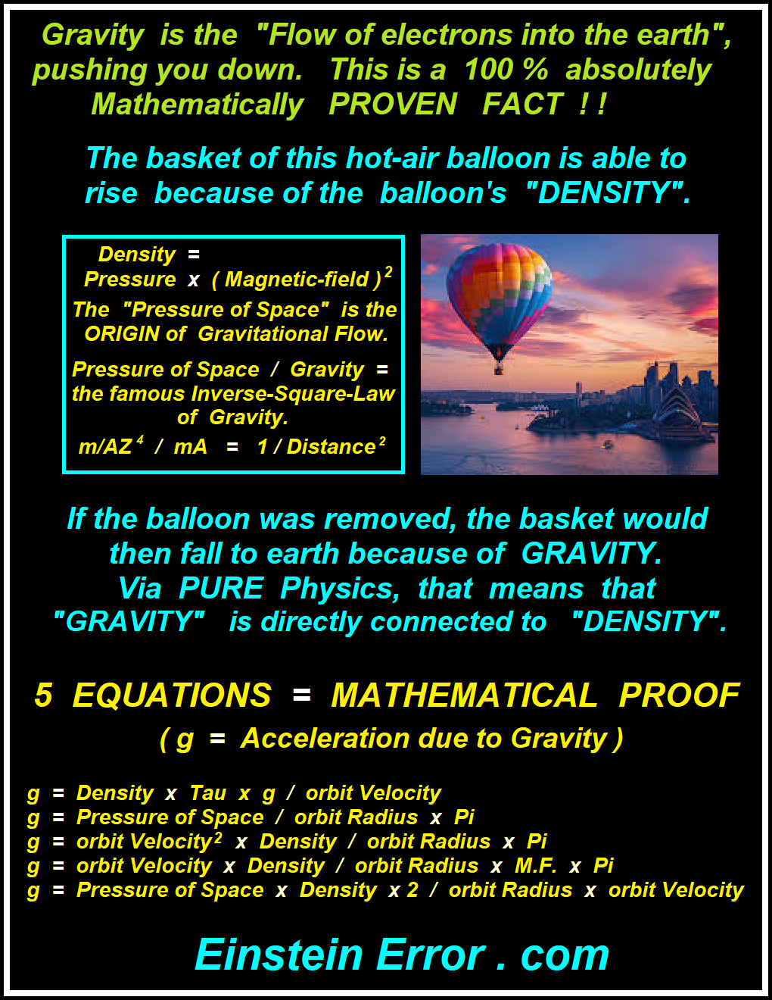
DO NOT FIGHT AGAINSTPURE MATHEMATICSYOU WILL ONLY LOSE !
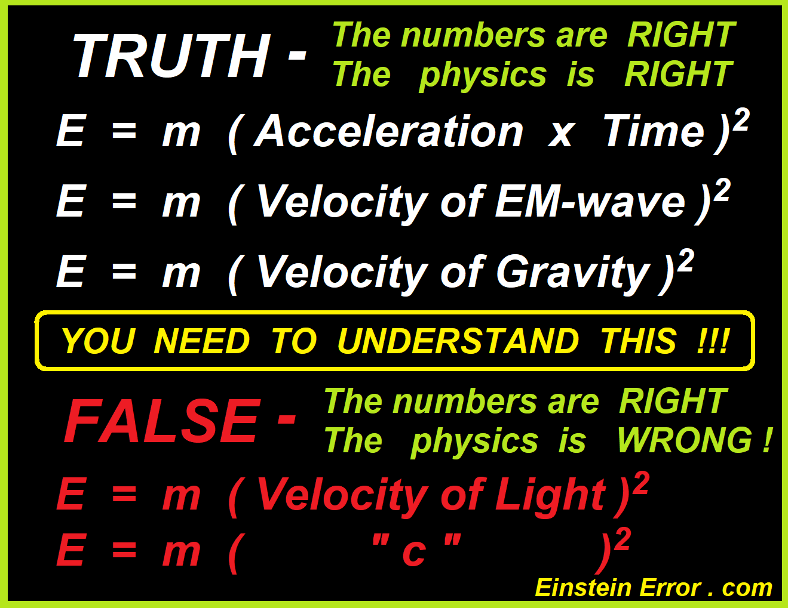
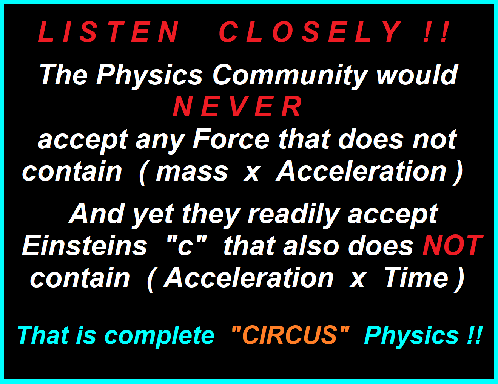
ALBERT EINSTEIN simply did not understand that EM-waves as well as the Flow of Gravity into the earth, are the ONLY two sources of ( Acceleration x Time ) that produce the famous299, 792, 458ALL measurements of Light were in fact a measure of the EM-wave !
Anytime in History when the " Speed of Light " has been obtained via experiment, it has ALWAYS ONLY been the speed of the Electromagnetic-Wave
AND THAT IS BECAUSE OF THIS REALITY ( below )
EXTREMELY IMPORTANT :
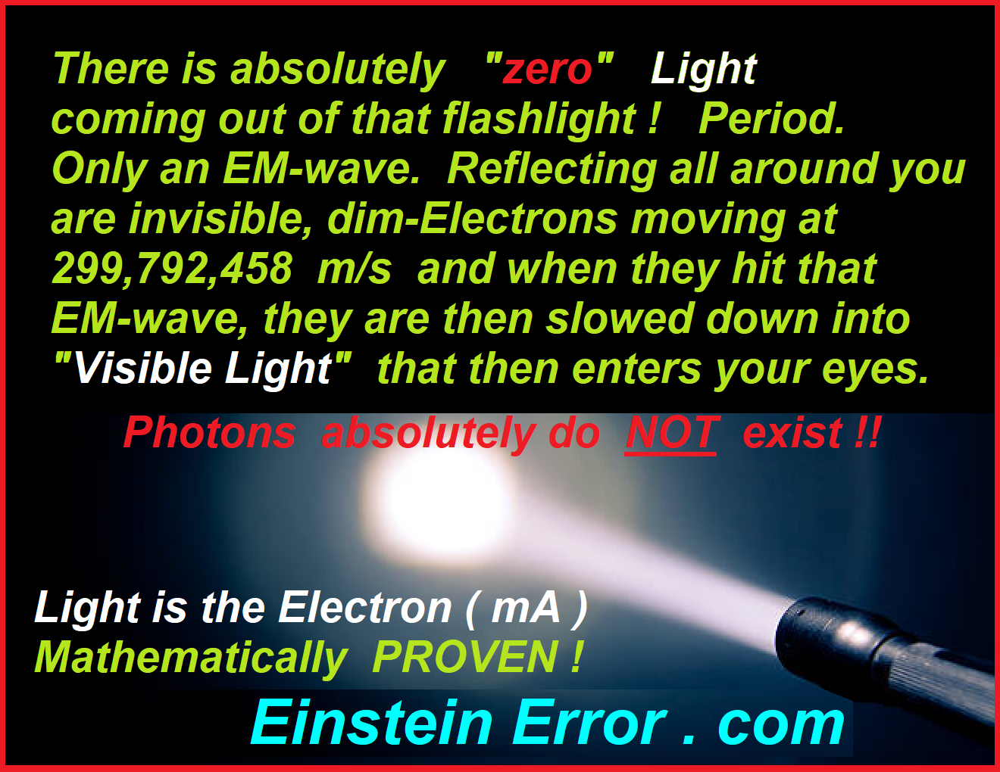
If you do not come to understand thatF A C T A B O V E
your comprehension of TRUE PHYSICS will never be realized. NEVER.
Because Albert Einstein did NOT understand the pure physics above, he was then led astray into making the biggest Physics B L U N D E R in Scientific History !
Einstein was duped into believing that Light moves at a CONSTANT Velocity.
Fact is, ONLY Gravity and the EM-wave move at a Constant velocity. And so WHY did he do that ? Because he was completely DUPED by J A M E S M A X W E L L who wrongly attributed his 4 equations to L I G H T when they are only truly physically connected to the Electromagnetic-wave.
NO NO NO ! ! Light is NOT part EM-wave. The "Double-Slit" experiment was a complete disaster because they did NOT understand the image above ! They do not understand that their "emitter-guns" are only sending an EM-wave and NOT Light or Electrons. They are NOT understanding these 2 MASSIVE Physics realities below . . .
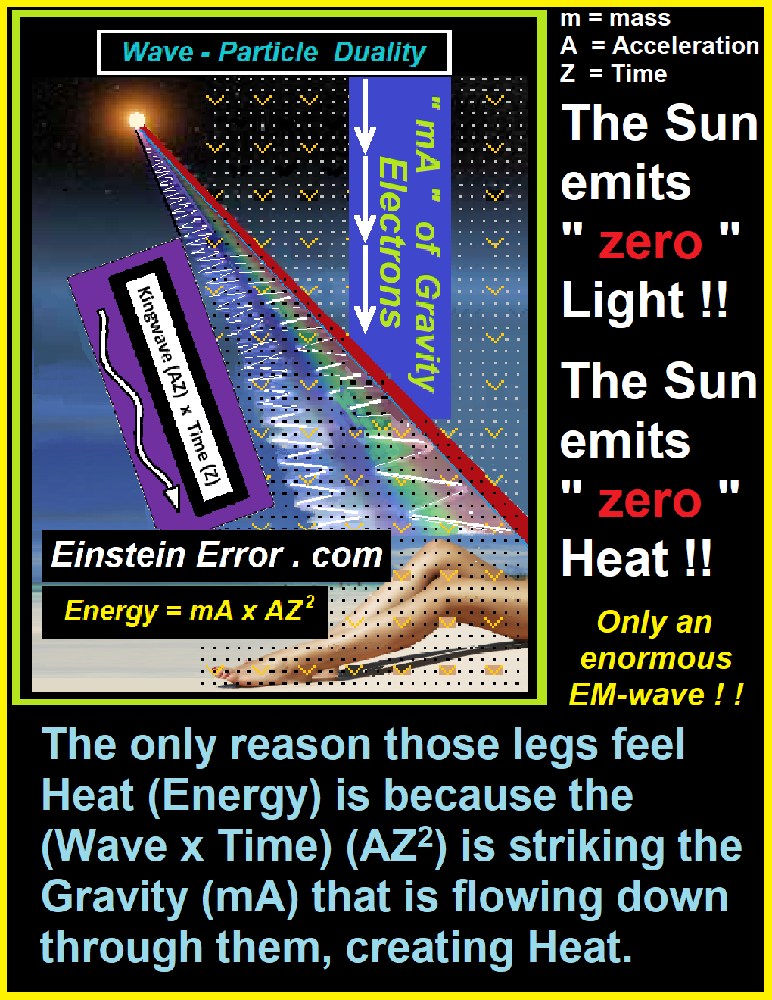
MATHEMATICS IS"DISCOVERED"NOT"INVENTED" !
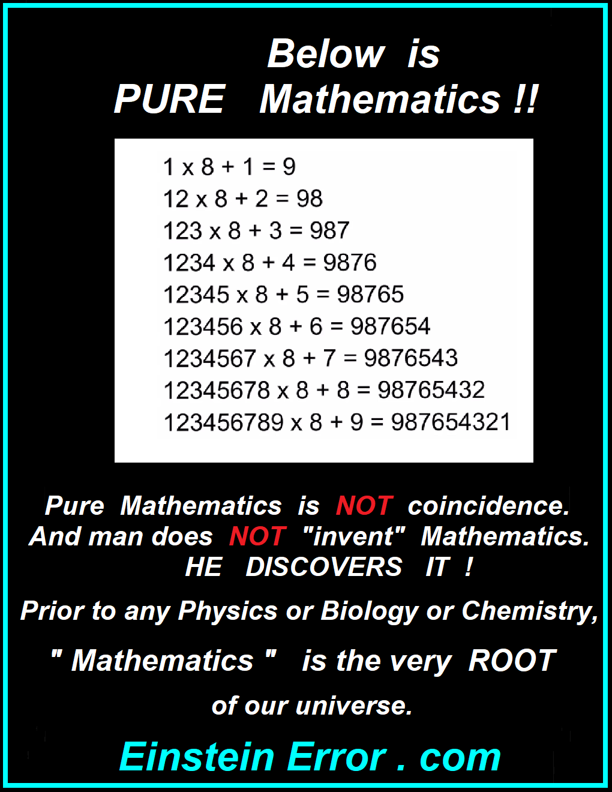
This PURE Mathematics below is NOT Coincidence ! it is the very ROOT of our galaxy !
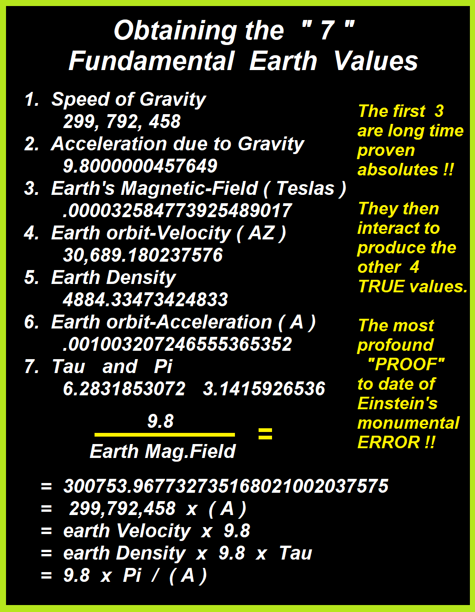
And if you believe that the above MATH is just coincidence or that it is NOT " Planet Relativity " then you may as well quit reading here and simply return to your dark dark CAVE of Einstein's M O N U M E N T A L E R R O R !
Below is absolute Mathematical - - PROOF - - of Einstein's ERROR ! And if you oppose it, you might as well argue that " Pigs Can Fly " because you're embracing the exact same FUTILITY !
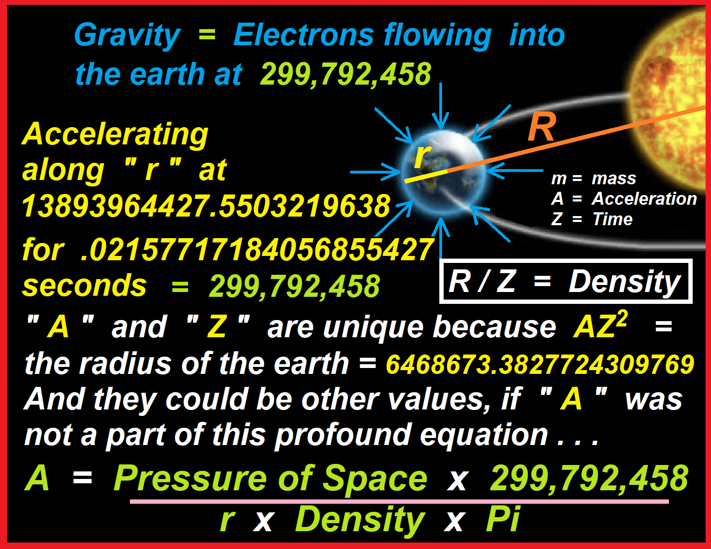
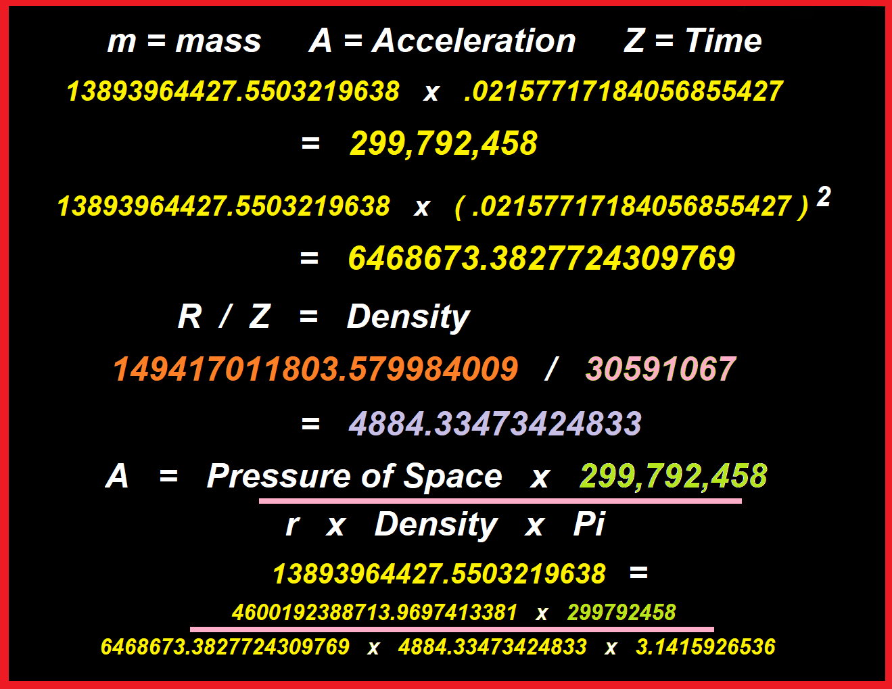
Every Physics Professor around the world knows that Einstein's equation does NOT " UNIFY " with quantum-mechanics ! And the reason it doesn't unify is because Albert simply did NOT understand that the "m" in his equation truly represents the IN-Flowing Gravitational Mass surrounding the object and NOT the mass of the object itself !
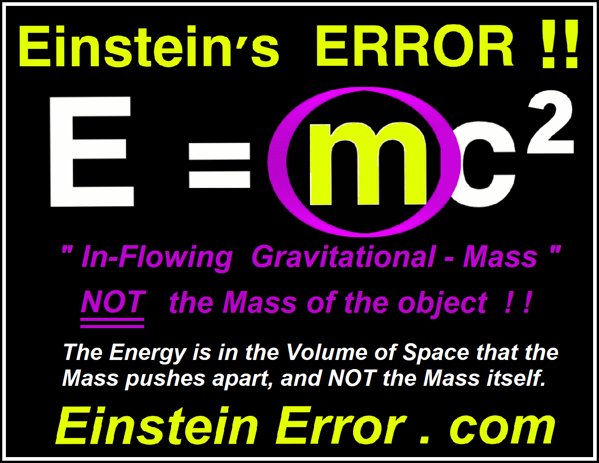
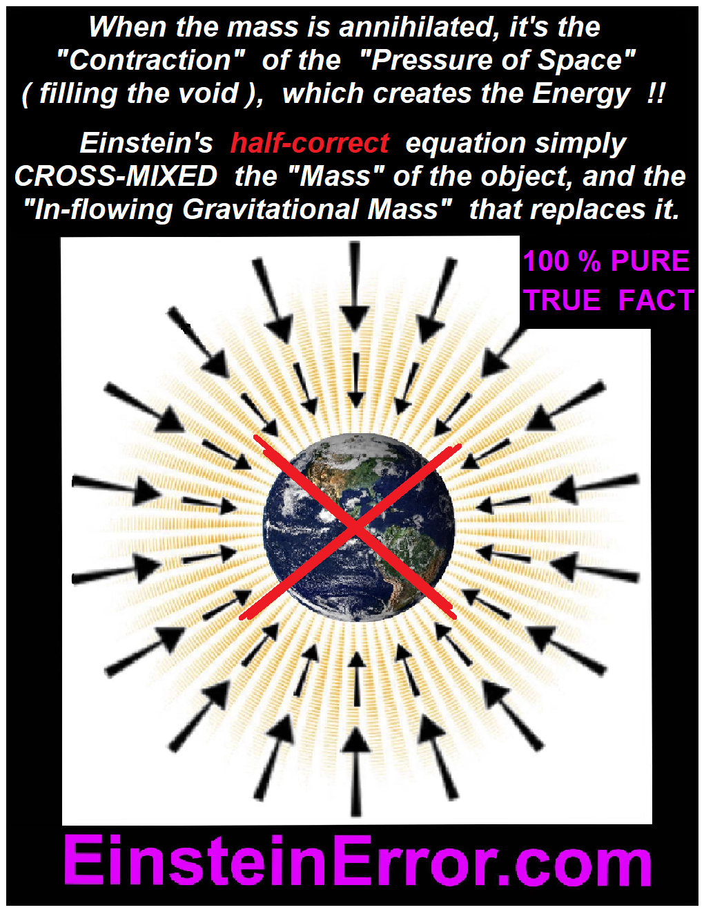
When any mass is annihilated the quantum-mass of Space ( the Ether ) rushes in to FILL the VOID and that is what creates the ENERGY !
And NO ! our PROVEN claim is NOT denounced because atomic bombs exist ! The truth is exactly as Tesla told Einstein . . . There is absolutely "ZERO" Energy inside any Mass, Period.
The mind-boggling CONTRACTION of SPACE into the " VOLUME " that the Mass once " D I S P L A C E D " is the origin of absolutely EVERY form of Energy on earth ! Einstein's HALF - CORRECT equation " CROSS - MIXES " the MASS and the VOLUME that Space "CONTRACTS" into. And if you think you can denounce this image below, you are sadly mistaken.
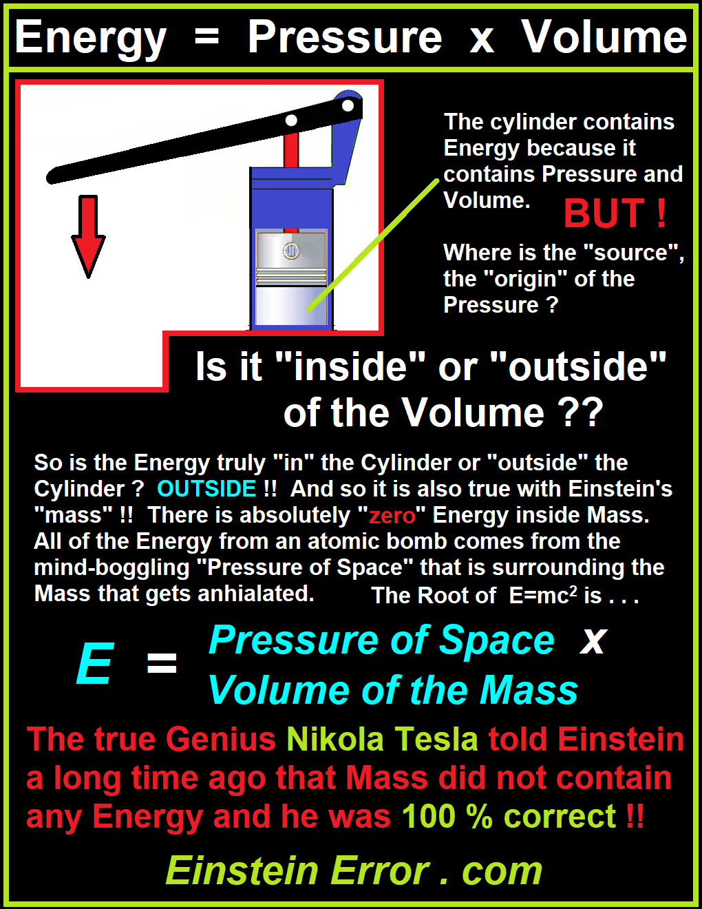
There is absolutely " Z E R O " energy inside any atom. Period ! The moment the enormous "Pressure of Space" is removed from around any atom, the atom simply disintegrates, which is the very definition of " COMBUSTION ".
This swirling wine is exactly like any atom. Once the Energy "outside" the atom (Pressure x Volume) is removed the Mass-Energy disappears. However, be sure to understand that "orbiting electrons" is complete FALSE physics. Protons and Electrons are simply alternating "Flow-States". Surely you realize that orbiting electrons would be "CRASHING" into each other ! In 1911 Ernest Rutherford was walking in deep darkness when he proposed "orbiting Electrons".
It would be plain ridiculous to say that the -- M O M E N T U M -- ( mass x Velocity ) of the moving wine " ORIGINATES " from " within " the glass !
The MOMENTUM of any atom is simply a product of the Energy of the ( Pressure of Space x the Volume ) of the atom. Period ! End of Story.
To assist your understanding of Einstein's MASSIVE ERROR you MUST get acquainted with this E L E C T R I C A L BREAKTHROUGH !
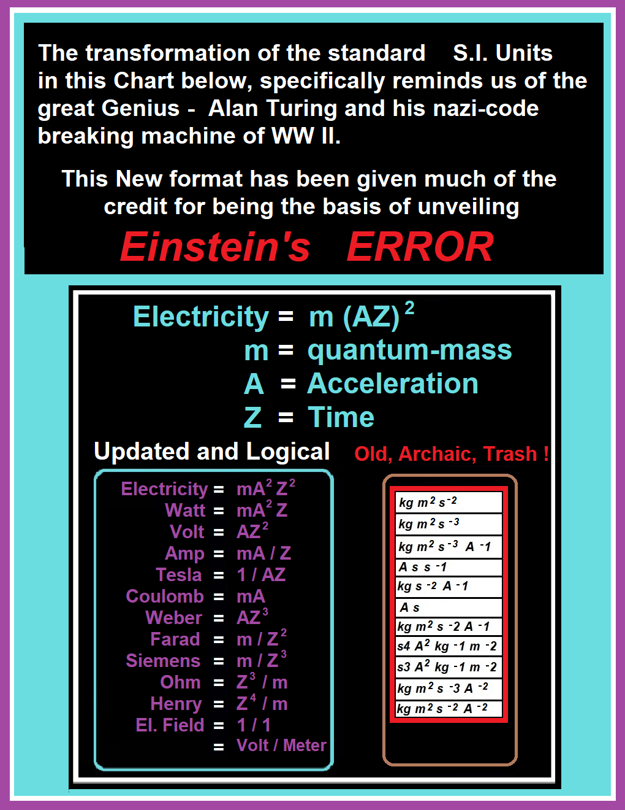
TRUE R E L A T I V I T Y exists among ALL earth-Orbit Values !
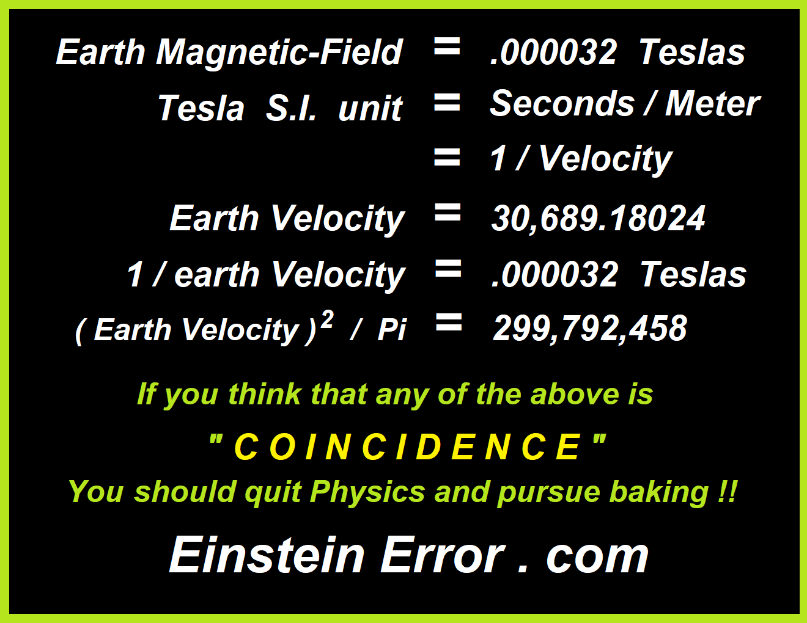
Again . . . if you fight against this PURE MATHEMATICS you'll only be kissing all hope of understanding PURE Physics a sweet Bye-bye !
If you're not able to understand and ACCEPT the image below, you will NEVER escape the " D A R K N E S S " of Einstein's Monumental E R R O R !
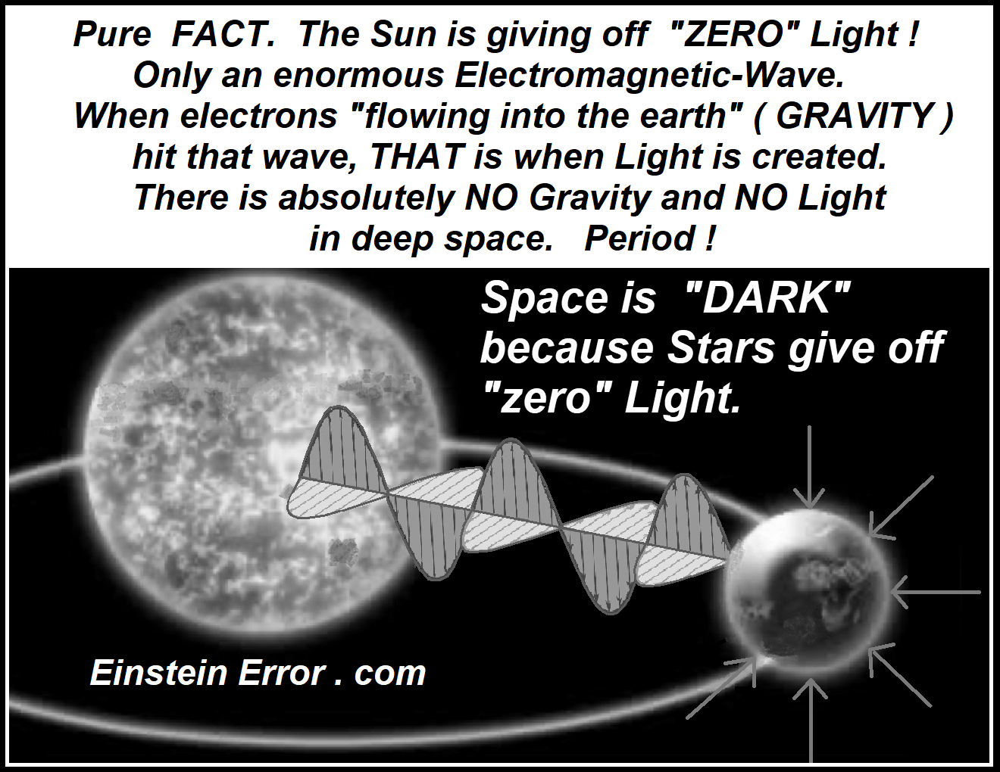
The question of " WHY IS SPACE DARK ? " is one of the biggest Mysteries in Astrophysics. NOW YOU KNOW THE TRUTH !
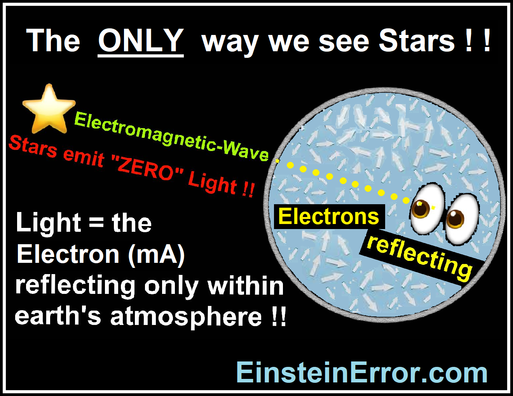
And NO ! Maxwell's 4 Equations DO NOT declare Light to be at a Constant Velocity as they ONLY pertain to the Electromagnetic-wave which is a complete and separate entity from L I G H T !
THIS IMAGE BELOW COMPLETELY CRUSHES MAXWELL'S MASSIVE ERROR !
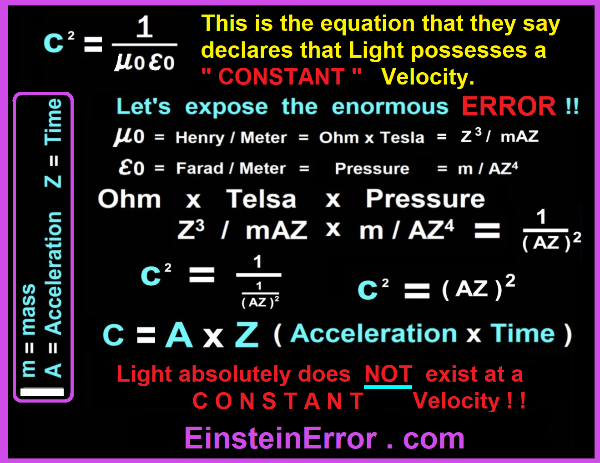
EXACTLY AS ABOVE. As GRAVITY (the flow of electrons into the earth) is slowed down by hitting any Electromagnetic-wave, those electrons are then transformed into "VISIBLE Light".
Einstein has now been 100 %SHUT DOWN !100 %A B A N D O N E D !
And if you reply saying "Einstein was already Proven Correct."
Please . . . STOP talking such knee-jerk nonsense !
Einstein's equation " WAS " - - " WAS " - - ONLY H-A-L-F Correct. SO OF COURSE 50 % of his results were proven True. That's exactly why his E=mc2 Equation has been so incredibly D E C E P T I V E and has held the Physics Community in complete BONDAGE for 100 years !
Those Electrons (above) flowing into the earth ( mass x Acceleration ) are the absolute ORIGIN of ;
Gravity (mA) Magnetism (mA) Electricity (mA) Time (mA) Light (mA)
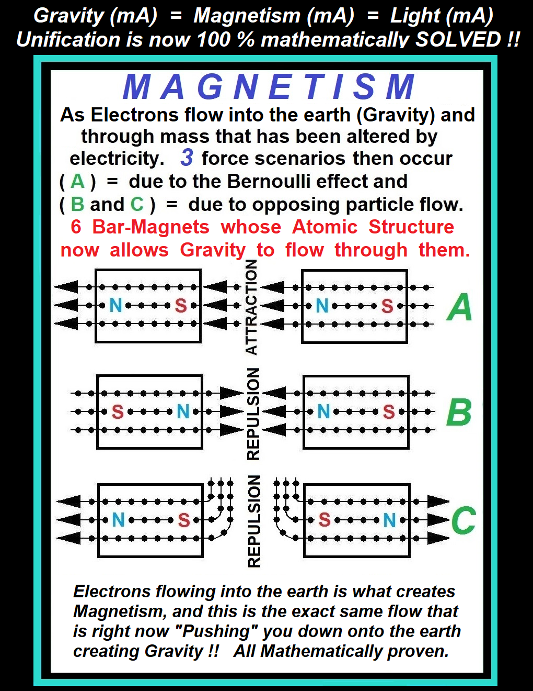
Electrons flowing between the two masses rather than Bernoulli's air molecules is the very definition of M A G N E T I S M !
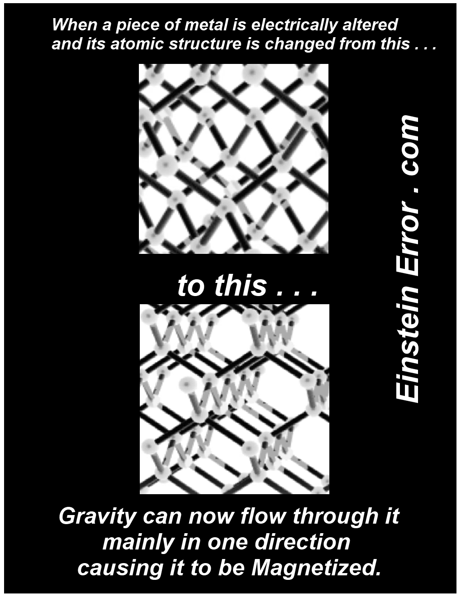
Electrons flowing into the earth ( Gravity ) is what creates the earth's " Magnetic-field " as well as what gives the earth a Negative " Charge " !
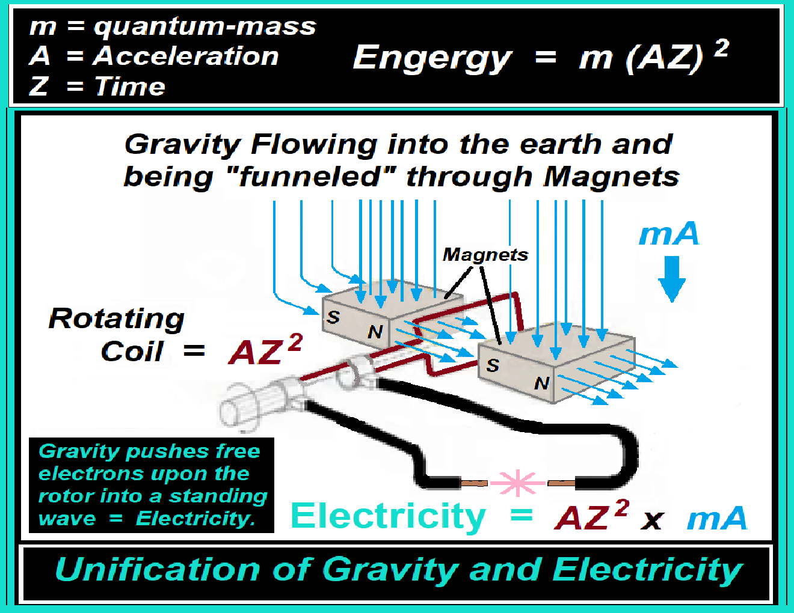
And now . . . This pure MATHEMATICS (below) is undeniable rock solid PROOF to the FACT that the "Pressure of Space" and "Earth orbit Velocity" are the ORIGINS of the Force of Gravity ( Electron Flow into the earth )
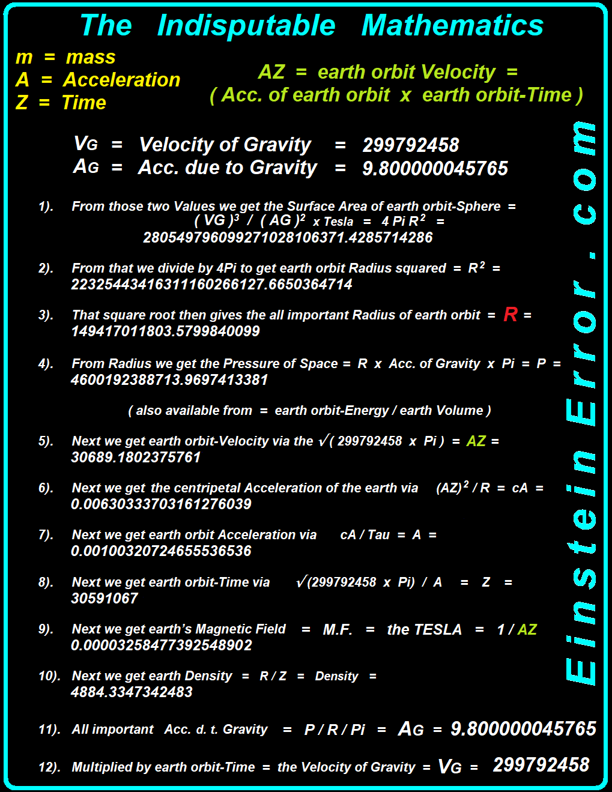
If you think the Mathematics below is just COINCIDENCE, you might as well throw in the towel right now re: the expectation of understanding ** TRUE ** Physics. Because the ONLY reason those numbers below are interconnected is because the earth is inside a Distinctly MATHEMATICAL ( Mass, Volume, Velocity ) Electrical orbit !
And these images below are theBiggest Mathematical Physics Breakthrough in 100 years !
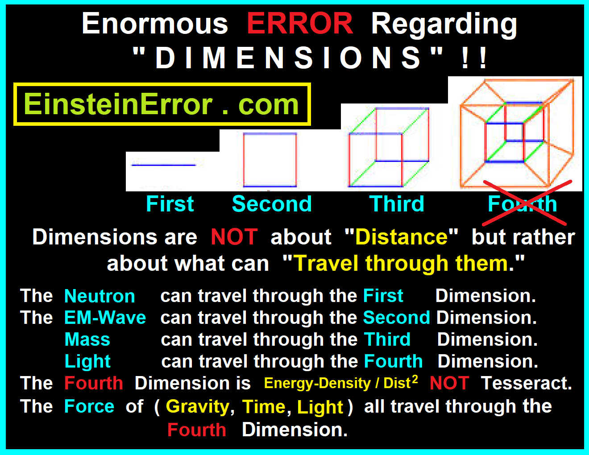
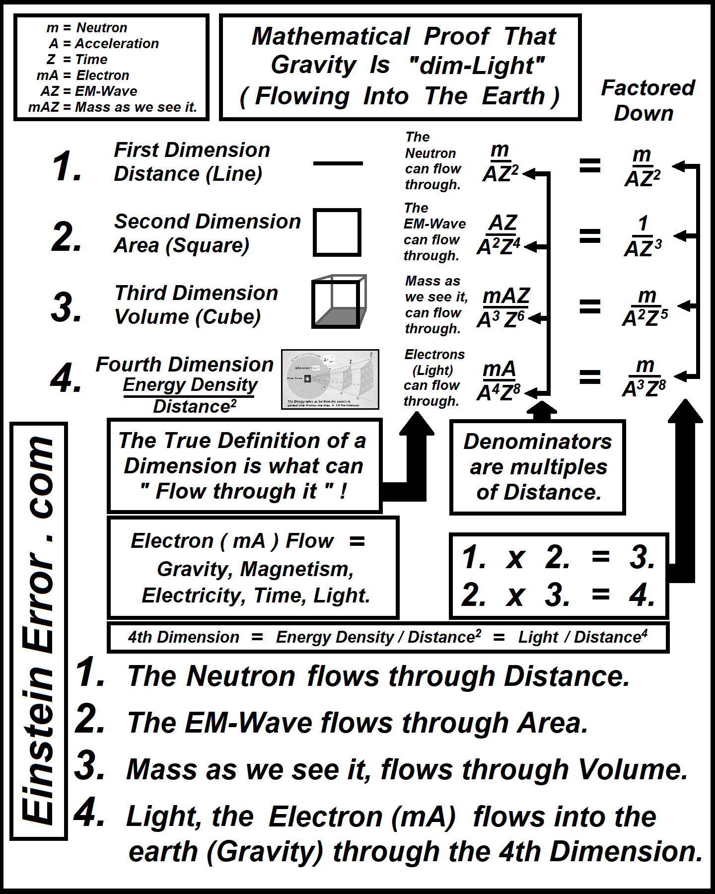
Einstein's equation is HALF - RIGHT but the problem is ... the PURE Physics of our galaxy B O L D L Y D E C L A R E S that
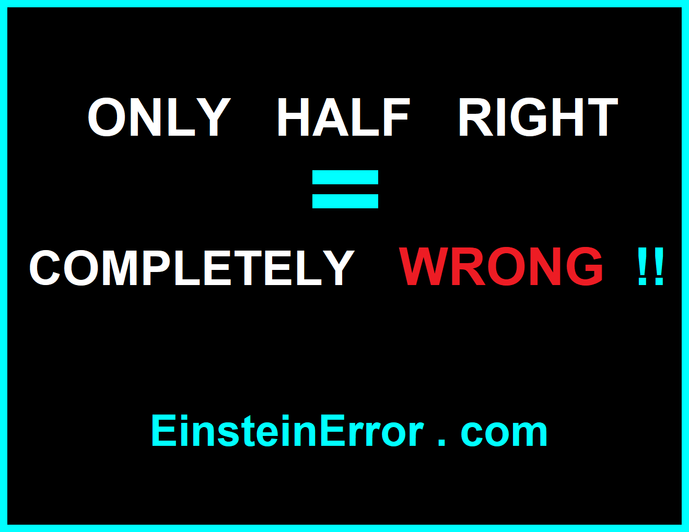
Einstein has NOW been Mathematically P R O V E N 100 % Completely F A L S E
Get ready to fully understand theBIGGEST Scientific DISASTER in the History of Mankind.
A L B E R T E I N S T E I N ( surely UN-aware of his ERROR ) placed 299,792,458 beside Light and tragically gave Light a F A L S E C O N S T A N T V E L O C I T Y Period. End of Story !
299,792,458 ONLY belongs to the Velocity of Gravity and the velocity of the EM-wave ! This FACT has been kept hidden because the physics Community does NOT understand this . . .
Every time scientists thought they were measuring the speed of LIGHT, it was actually the speed of the EM-Wave that they were measuring. The only way to measure the speed of LIGHT is by measuring the velocity of " I M A G E S " ( as in mirrors ) because only Images are emitting Light.
Any white-Light that we see, is simply electrons reflecting off of an EM-Wave ! So in experimentation when they were seeing "White Light" they were truly measuring the Velocity of an EM-Wave.
Here is your Mathematical P R O O F that Light does NOT exist at a constant Velocity . . .
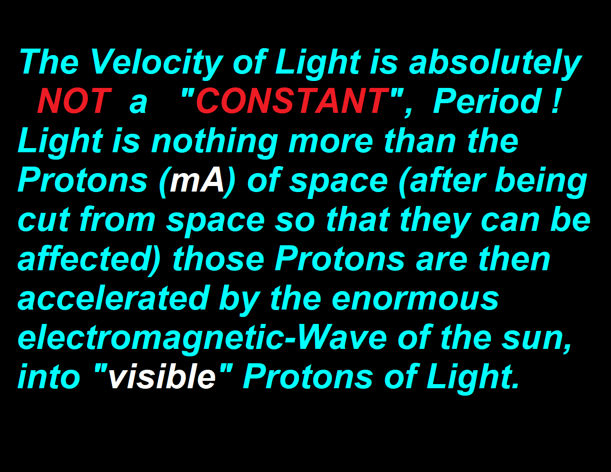
If Light truly existed at a " Constant Velocity " the ROOT of that equation (above) would absolutely N O T contain the factors of ( Acceleration x Time ) It would be displayed in Meters / Second and nothing else. In the exact same way that Einstein's " c " ( Velocity of Light ) does NOT possess ( Acceleration x Time )
AND HERE IS THE BOMB !
Listen CLOSELY . . . The Physics Community would " NEVER " accept any FORCE ( F = ? ) if it did not contain " Mass x Acceleration " And yet they readily accept Einstein's FALSE Velocity "c" that also does NOT possess " Acceleration x Time " GO FIGURE ! ! That has got to be the purest definition of Absolute Circus Physics Yes Today's Physics is pure HCP " Hypocritical Circus Physics " !
THEY ARE COMPLETELY "BLINDED" BECAUSE EINSTEIN WAS 50 % CORRECT ( 100 % WRONG ! )
BE SURE TO UNDERSTAND THIS " MOST IMPORTANT IMAGE " IN PHYSICS TODAY !
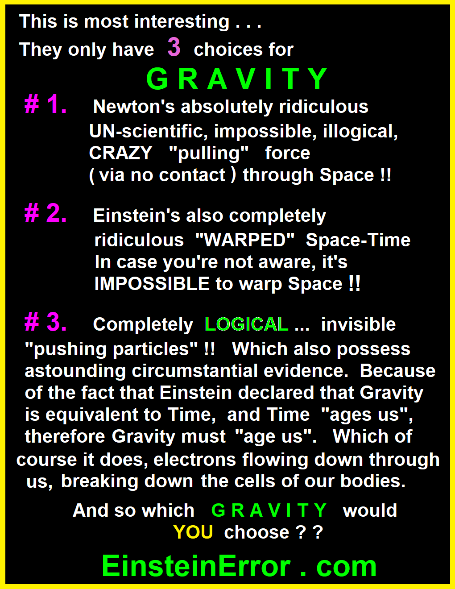
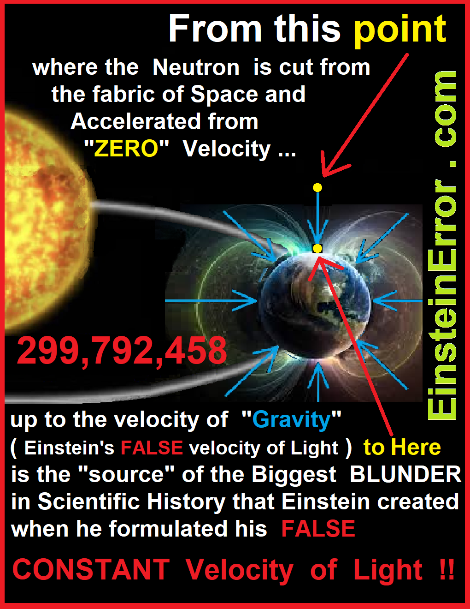
Hence, Albert Einstein and his completely " UN-lawful " physics then created the biggest B L U N D E R in Scientific History because he blindly accepted MAXWELL's enormous E R R O R when Maxwell attributed his 4 Equations to both the Electromagnetic-Wave " as well as " to Light ( instead of ONLY to the EM-Wave ) P U R E Correct Physics.
Albert Einstein took this TRUE orbital PHYSICS (below) which is Mathematically PROVEN and containing enormous Circumstantial Evidence
SORRY FOR THE LACK OF EDITING AHEAD AS THE HTML WAS ALTERED BY SOME ROGUE Ai.
The image above is the ORIGIN of the T R U E "Force" of Gravity. Earth's Magnetic-Field cutting Neutrons from the fabric of Space, as they are then immediately pushed onto the earth by the enormous Pressure of Space !
Einstein then FALSELY took that TRUE Velocity of GRAVITY (above) and tragically OMITTED its ( Acceleration x Time ) 9.800000045765 x 30591067 as he then attached it to Light and then passed LIGHT off as having a CONSTANT Velocity. Which is absolutely FALSE ! FALSE ! FALSE !
ALL Light originates from " ZERO Velocity " before it is Accelerated by Gravity up to the Velocity of Gravity after which it then dissipates back to ZERO Velocity ! This is why Einstein's "Photon Clock" is a complete BLUNDER ! ( Because Light is always slowing down. ) PURE MATHEMATICAL REALITY !
There's a good chance you may not have FULLY ABSORBED what you just read so once again . . . ALL Light originates from STATIONARY Neutrons ( m ) The "Fabric of Space". ( NO NOT Photons ! ) that are at ZERO Velocity.
Here's some sweet Mathematics for you: Space, the lattice of Neutrons ( m ) plus the EM-wave emitted by the sun ( AZ ) = the composition of Space ( mAZ ) and Division by Time = Flow. Space ( mAZ ) divided by Time ( Z ) = the Flow of Gravity. mAZ / Z = mA = the Force of Gravity. The FORCE of Gravity is the FLOW of Gravity !! Exactly like a long time ago when the Genius "Carl Gauss" told Einstein ( who didn't listen ). And so after those Neutrons ( m ) are Accelerated ( A ) by Gravity into Electrons ( mA ) of Light they immediately begin dissipating back down to ZERO Velocity ! ( which of course takes time due to their near zero friction )
" C O N S T A N T "LIGHT VELOCITY IS AG A R G A N T U A NPHYSICS E R R O R ! !
AND EINSTEIN'S E Q U A T I O NIS AM O N U M E N T A LS C I E N T I F I C B L U N D E R ! !
The ONLY reason that Einstein has continued for so long is because his equation is
" H A L F " Correct ! " H A L F " Correct !
AND . . . be sure to understand thatH A L F - Correct is 1,000 times* * * M O R E D E T R I M E N T A L * * *than being completely wrong !!
If you want an easy way to remember Einstein's E R R O R just remember that the "c" in his equation stands for " C A T A S T R O P H E " because he didn't reduce itsVELOCITYdown toACCELERATION x TIME